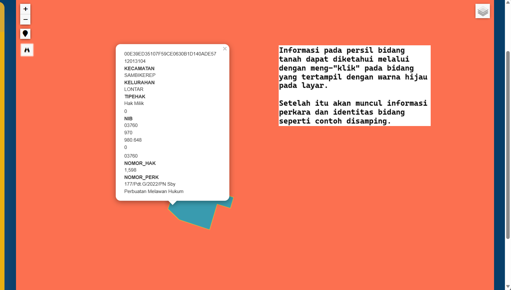
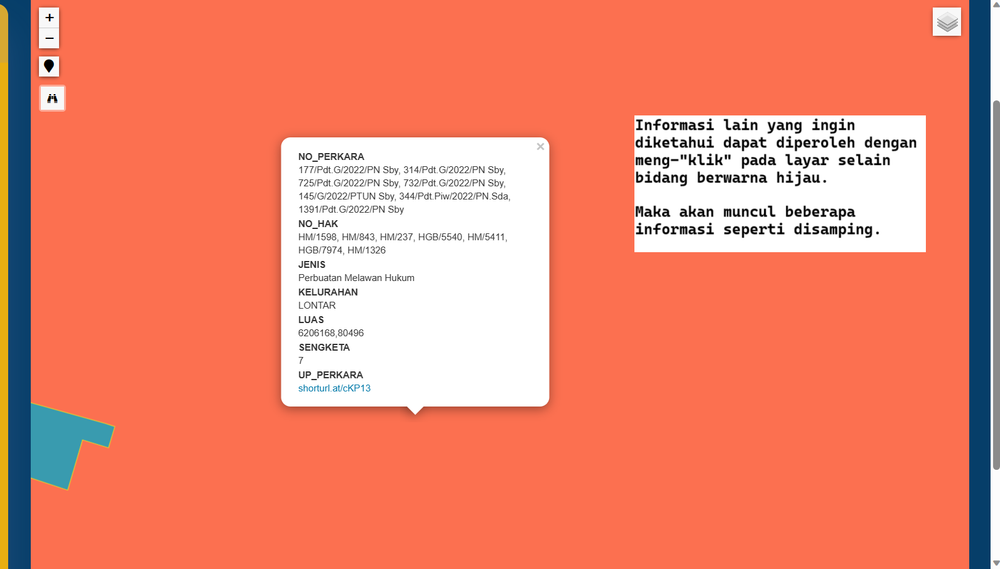
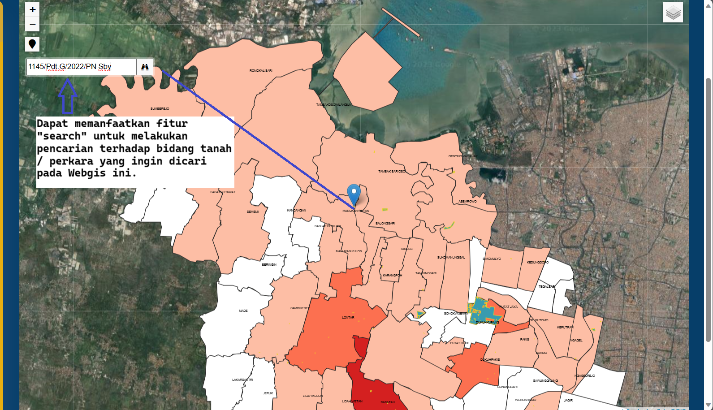

<!Doctype html>
<html>
    <head>
        <title>Peta Persebaran Sengketa</title>
    </head>
    <body>
		<center><p class= "logo">    
	</body>
</html>

<!DOCTYPE html>
<html>
	<head>
		<center>
        <p style="color:#e8af11; font-weight:bold; font-size:25px">
        	PANDUAN PENGOPERASIAN
            <meta charset="UTF-8">
            <meta http-equiv="X-UA-Compatible" content="IE=edge">
            <meta name="viewport" content="width=device-width, initial-scale=1.0">
            <link rel="stylesheet" href="style-3.css">
		</center>
    </head>
	<body>
		<div class="container">
			<!--This is Sidebar-->
			<aside>
				<div class="sidebar">
					<a href="index-2.html" class="activetop">
						<span class="material-icons-sharp">
						</span>
						<h3>Beranda</h3>
					</a>
					<a href="Layanan.html">
						<span class="material-icons-sharp">
						</span>
						<h3>Panduan</h3>
					</a>
					<a href="https://docs.google.com/document/d/1N6iGWdiVuLuLgGA9wpG5np-zBd71mQUPCMQ8bSKeTQU/edit">
						<span class="material-icons-sharp">
						</span>
						<h3>Update Perkara</h3>
						<span class="material-icons-sharp">
						</span>
					</a>
					<a href="Tentang Kami.html">
						<span class="material-icons-sharp">
						</span>
						<h3>Tentang Kami</h3>
					</a>
					<a href="index.html">
						<span class="material-icons-sharp">
						</span>
						<h3>Logout</h3>
					</a>
				</div>
			</aside>
        <!--End of Sidebar-->

		<main>
			<p style="color:white; font-size:18px"; align ="justify"> 
			<br> WebGIS Sengketa Perkara ini dibuat untuk memudahkan Seksi Pengendalian dan Penanganan Sengekta Kantor Pertanahan Kota Surabaya dalam
				mengadministrasi data-data perkara yang ada. Berikut panduan yang dapat diikuti dalam mengoperasikan WebGIS Sengketa Perkara ini:
			</br>
			<p class= "logo">  
			<p class= "logo">
			<p class= "logo">   
    	</main> 
</html>
	<hr>
<!DOCTYPE html>
<html lang="en">
<head>
    <meta charset="UTF-8">
    <meta name="viewport" content="width=device-width,initial-scale=1.0">
    <title>footer</title>
    <link rel="stylesheet" href="style1.css">
</head>
<body>
    <footer>
        <div class="footer-bottom">
            <p> @Copyright Kementrian Agraria dan Tata Ruang/ Badan Pertanahan Nasional</p>
            <p> Designed by Tim MBKM STPN KANTOR PERTANAHAN KOTA SURABAYA I</p>
    </footer>
</body>
 </html>
